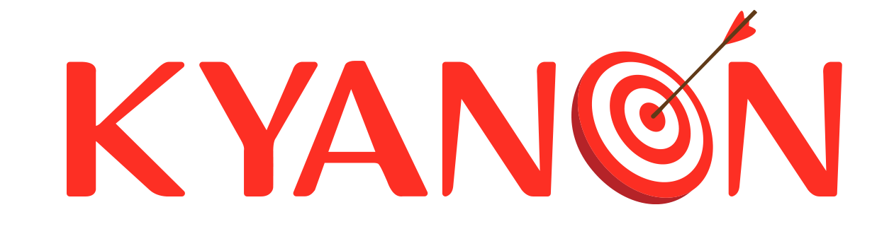

Team Research Plan: 13 Weeks, Nov 2026 – Jan 2027
One plan for the whole team, beginners included · learn by building, apply to the Godine PoC

Week 0 · prep for beginners
Python basics
HTTP, JSON & APIs
Git & pull requests
Docker Compose
First LLM API call
1 · FoundationsWeeks 1–4
W1
LLM basicsStructured output via LiteLLM + Pydantic; compare 2 models
W2
n8n basicsForm → LLM summary → Slack workflow
W3
Tool calling & MCPAgent calls a mock Godine API
W4
RAG basicsFAQ bot on pgvector, answers with citations
Checkpoint 1Each pair demos a mini agent: n8n + LLM + RAG + 1 tool · beginners reach L1
2 · Agentic engineeringWeeks 5–8
W5
LangGraph & routingIntent router, Postgres checkpoint, human approval
W6
Context, memory & conversationMemory across sessions, multi-turn handling
W7
Guardrails & error handlingBlock 10 attacks; survive a provider outage
W8
Evaluation & observabilityLangfuse traces, 20-case benchmark, eval gate
Checkpoint 2Agent template + 6 skill modules, benchmarked · beginners reach L2
3 · Workflow & GodineWeeks 9–13
W9
FDE discoveryGodine channels, use cases, systems, baseline
W10
Workflow patterns & multichannelPriority channel + Chatwoot handoff on n8n
W11
Godine PoC end-to-endReal data, benchmark of ≥ 50 conversations
W12
Deploy & operateStaging deploy, load test, cost per conversation
W13
Review & wrap-upGodine demo, go / no-go, team retro
Checkpoint 3Godine PoC report · Skills Library v1.0 · Framework v1.0
Every week
Self-study 3–4 h
Pair lab 3–4 h: one experienced + one new
Friday sharing 1 h, rotating presenter
Code in one team repo
kyanon.digital